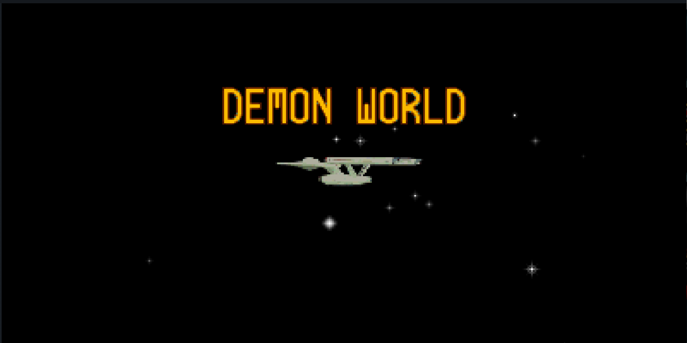
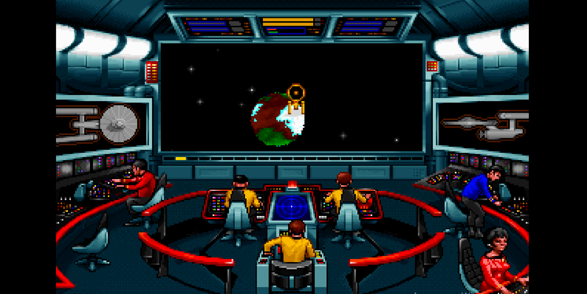
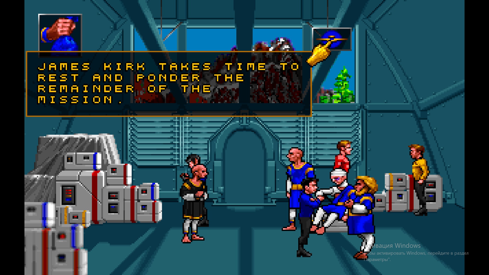
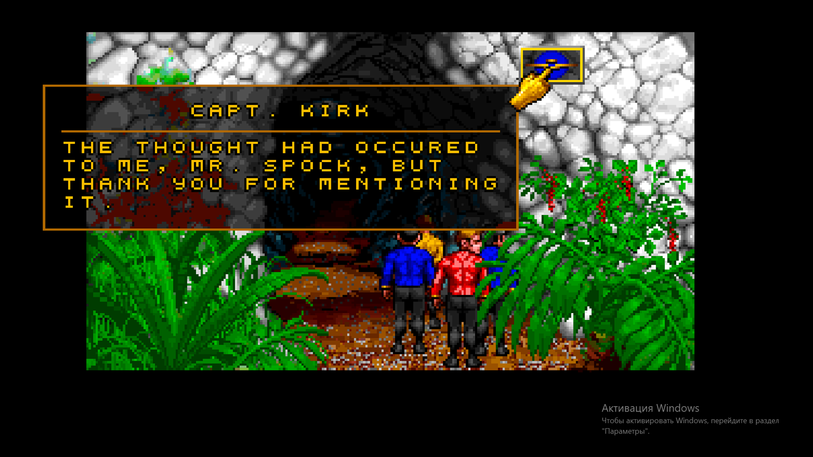
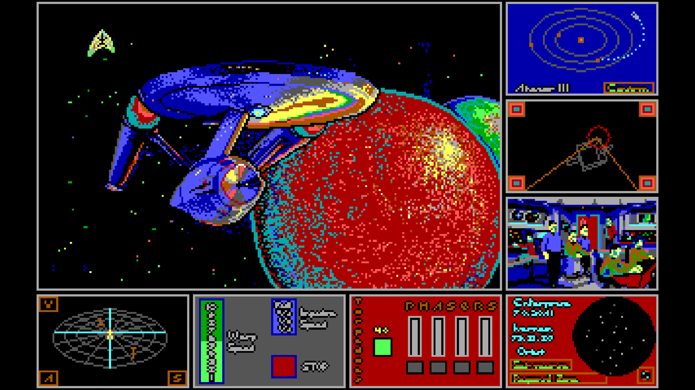
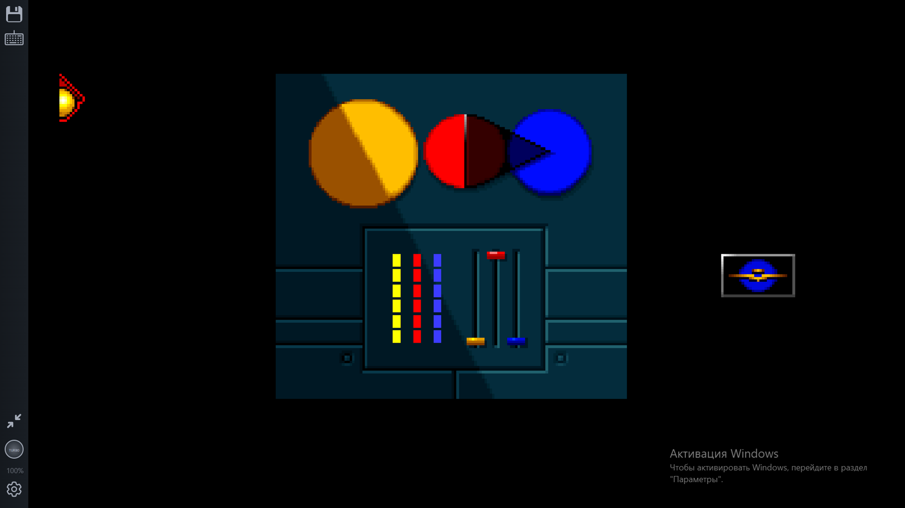
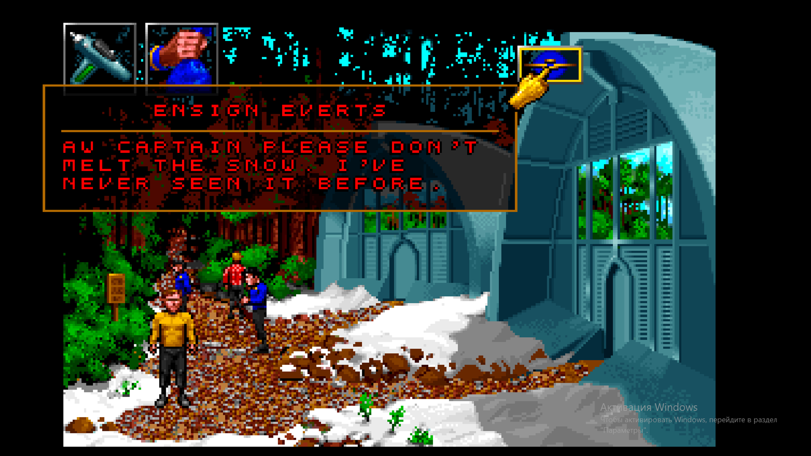
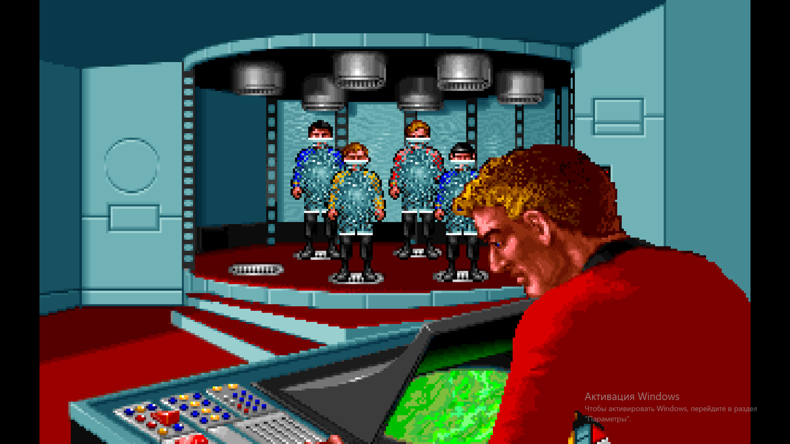

Star Trek 25th Anniversary – это point and click RPG 1992 года.

Point and click механика сопровождается красивой спрайт анимацией ходьбы по миру, расположенному в перспективе (так что персонажи еще и перспективно уменьшаются!), а также красоту спрайт-анимации можно увидеть, когда персонажи выполняют работу (починка, лечение, наклоны, богатая idle-анимация, где они крутятся и иногда смотрят на свои трикодеры-флипфоны).
По цели – это игра-головоломка, и ваша задача: разгадать загадку планеты, поселенцы на которой видят демонов из своих религий (я играла в главу Demon World).
Игра разделена на 2 смысловые части: Звездолет и Планета.
Первая часть наследует традицию игр Star Trek, которые до 80х годов были боевыми стратегиями. Слегка странно делать столько боевых игр СтарТрек, учитывая посыл сериала. Но именно в этой игре мы нападаем на звездолет во время тренировочной битвы и никого не убиваем – достаточно для оммажа и в духе оригинала. В сюжете на планете доступно обездвиживание без убийства, а если игрок использует фазер слишком часто – то вся команда по очереди говорит ему, почему не стоит.

Вторая часть – Планета – в более ранних играх встречалась (например, в Стар Трек Ребел Юниверс), но носила чисто функциональную часть (добыть ресурсы) и была представлена в текстовом виде. В этой же игре графика и экология планеты – главные (и неотразимые) герои. Поэтому, если выбирать из 2.5 игр по стартреку, в которые я сыграла, (и шести, про которые прочитала) – эта игра наиболее полно отвечает духу медиа.

Ещё один плюс – чудесно прописанный сюжет для головоломки. Часто в подобных проектах неумолимая логика «решай-побеждай» вытесняет этическую сторону сюжета, но не здесь – вы решаете маленькие головоломки, но оперируете в сложном мире, с религиозной научной общиной, смертоносным оружием, гореванием по больным и умершим, и всеми последствиями. Даже диалоги с командой носят не функциональных характер подсказок, как было в предыдущих играх, а часто сюжетный. Например, вам не обязательно каждый раз спрашивать Спока, что он думает, но если вы будете – то часто он или выражает мнения, или шутит, или ругается с доктором команды.

Для сравнения ниже - более старая игра Стар Трек Ребел Юниверс - красивая, но малочисленная и статичная графика, оригинальный интерфейс и фокус скорее на технологиях, чем на людях.

Один из плюсов (и минусов) игры – богатство механик. Механики на Звездолете: поднятие щита, стрельба, починка корабля, запись бортового журнала, консультация с бортовым компьютером, просмотр карты с псевдо-выбором (куда ни нажми на карте – прилетаешь в одно место), выход на орбиту планеты, связь с населением планеты, телепортация на планету. Механики на Планете: диалоги с NPC с выбором ответа, диалоги со своей командой без выбора ответа, ходьба, функция «Смотреть/читать» - позволяет увидеть все глазами капитана, использование инструментов (научное исследование, медицинское обследование, лечение, связь с кораблем, фазер обездвиживающий, фазер убивающий), использование объектов на планете (можно поуправлять компьютером или потрогать камни), функция «Взять объект».

Благодаря такому разнообразию игроку всегда есть чем заняться, а разработчики, кажется, предусмотрели каждое ваше действие (я училась стрелять из фазера, направляя его на снег, чтобы никого не задеть, и член команды сказал «Ну капитан, хватит плавить снег, я же его в первый раз вижу»). Одновременно с этим, обо всех контролерах вам нужно узнавать самостоятельно методом тыка (может я читала не ту ПДФ-инструкцию). Пов вы капитан корабля и жмете на все кнопки.

Минус, не сильно испортивший игру, но немного расстроивший – интерфейс бортового компьютера, который ждет точно сформулированного единственным образом вопроса (например, информация про планету Pollux V доступна только при запросе Pollux, но не Pollux V или planet Pollux). Также, раз уж это компьютер, было бы удобно поместить в него и внутриигровую инструкцию (игра выходила на ПК в том числе).
Саунд-дизайн – сигналы и обратная связь технологий унаследована от оригинального сериала и отлично вписывается в игру (звуки коммуникаторов, медицинского оборудования и т.д.). Вместе с этим есть крутая музыка на ключевых сюжетных сценах, отлично погружающая вас в сюжет. Обратная связь при этом часто дается голосами команды (например, если вы прикажете офицеру коммуникаций связаться с атакующим вас кораблем – она вежливо скажет, что сейчас капитан не может ответить) – этот ход отлично включает всех персонажей, характеризуя их интонацией ответов и продвигая идею командной ответственности.
Визуальный дизайн интерфейса при этом оригинальный (есть неудобные моменты, например, чтобы закрыть диалоговое окно с компьютера, нужно каждый раз нажимать на новое место), но значительно проработан (например, выбирая действие «Говорить» ваш курсор превращается в золотой бабл с движущимися губами – очень красиво. Дизайн сцен при этом тоже разнообразный – мы видим героев со всех сторон, а сами сцены часто нарисованы в красивой перспективе, куда всегда можно зайти.

Эта игра наследует лучшие стороны кинематографа (комплексная этика, красивые кат-сцены и графика) и игры (богатство механик, обратная связь на каждое действие, ясная цель), в результате позволяя вам самостоятельно прожить увлекательную историю.